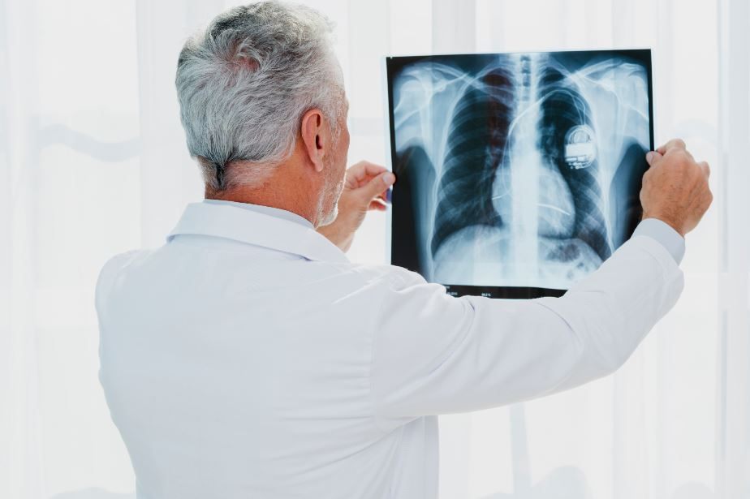
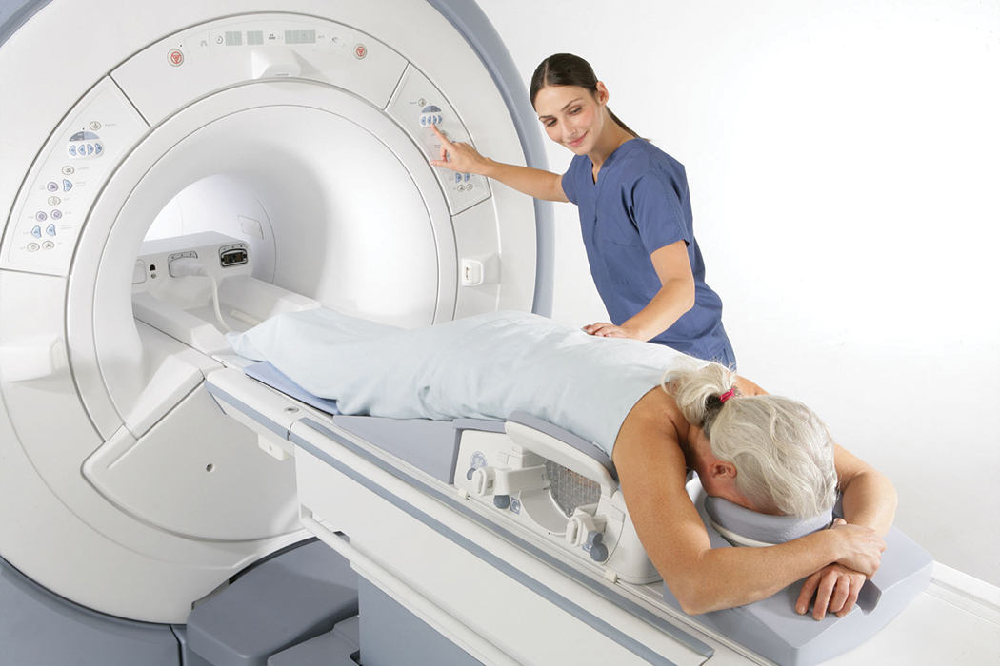
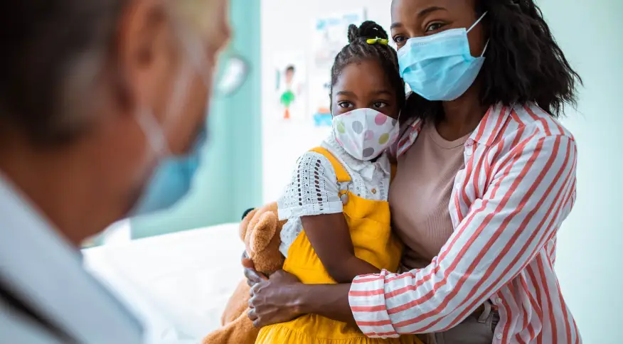
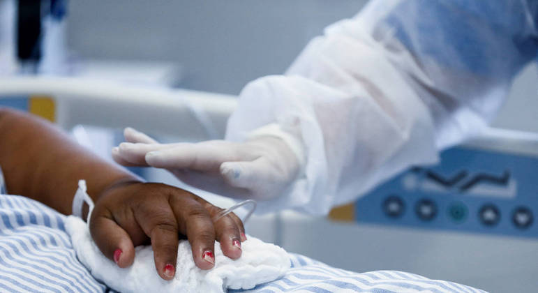

EXAMES DE IMAGENS
São procedimentos feito para ajudar e incrementar nas consultas, facilitar na pesquisa de onde vem o problema, orientando de como obter a solução, estudando as partes internas do corpo, identificando padrões e anormalidades.
Raio-X

Ultrassonografia
O ultrassom é um exame de imagem muito confiável na hora de fornecer imagens de qualidade para investigar diversos órgãos do corpo humano. Ele não utiliza radiação ionizante e adquire as imagens em tempo real.
Ressonância Magnética

A ressonância magnética é uma técnica de imagem médica usada em radiologia para formar imagens da anatomia e dos processos fisiológicos do corpo, tanto na saúde como na doença.
EXAMES LABORATORIAIS
Exames Laboratoriais são todos aqueles exames ou testes solicitados por médicos, ou outros profissionais da área da saúde, realizados em Laboratórios de Análises Clínicas.
O objetivo principal é confirmar a suspeita de uma doença. Mas também são realizados exames de rotina, ou check-up.
Através do exame laboratorial é possível avaliar se há alguma alteração, ainda que assintomática, para que o tratamento possa ser iniciado o mais breve possível ou mesmo avaliar o risco anestésico-cirúrgico em caso de avaliações pré-operatórias.
Hemograma
É um tipo de exame que analisa informações específicas sobre os tipos e quantidades dos componentes no sangue.
Urinálise
Análise da urina com fins de diagnóstico ou prognóstico de estados fisiológicos ou patológicos. Consiste em uma subespecialidade da Patologia clínica. A análise da urina é um dos métodos mais comuns de diagnóstico médico.
COVID-19
O coronavírus (COVID-19) é uma doença infecciosa causada pelo vírus SARS-CoV-2.
A maioria das pessoas que adoece em decorrência da COVID-19 apresenta sintomas leves a moderados e se recupera sem tratamento especial. No entanto, algumas desenvolvem um quadro grave e precisam de atendimento médico.

O vírus pode se espalhar pela boca ou pelo nariz de uma pessoa infectada, em pequenas partículas líquidas expelidas quando elas tossem, espirram, falam, cantam ou respiram. O tamanho dessas partículas vai de gotas respiratórias maiores até aerosois menores.

A infecção pode ocorrer caso você inale o vírus quando estiver perto de alguém que tenha COVID-19 ou se você tocar em uma superfície contaminada e, em seguida, passar as mãos nos olhos, no nariz ou na boca. O vírus se espalha com mais facilidade em locais fechados e em multidões.